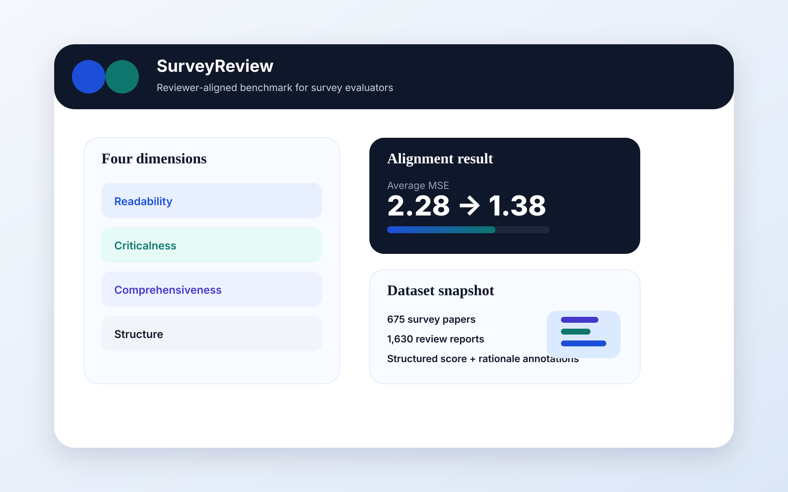
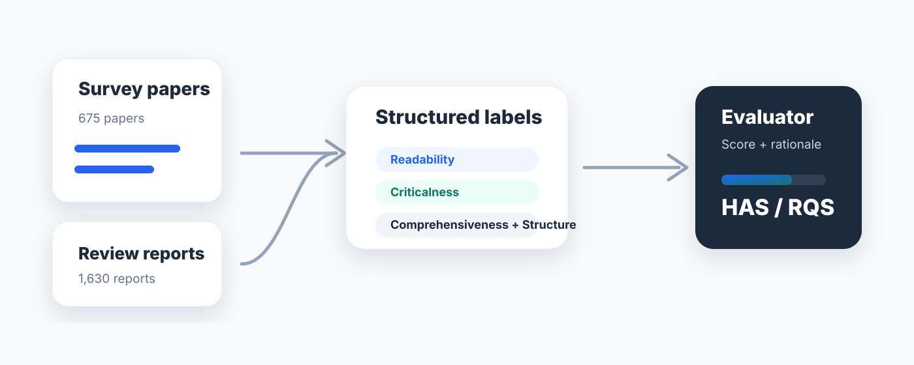

1. Peer-review data
Collect survey papers and authentic review reports, then organize comments into a reviewer-aligned annotation schema.

SurveyReview is a reviewer-aligned benchmark for evaluating whether automatic survey evaluators make judgments that match human peer reviewers.
The rapid advancement of large language models has transformed survey writing from a months-long manual effort into an automated process. As generation scales, reliable evaluation becomes the bottleneck, and LLMs are increasingly used as survey evaluators. Existing approaches largely rely on off-the-shelf LLM-as-a-judge methods without systematic alignment to human reviewers.
SurveyReview addresses this gap with a reviewer-aligned, multi-dimensional benchmark and dataset for survey evaluation. It converts authentic peer-review comments into four-dimensional scores and supporting rationales, then evaluates automatic systems through score alignment and reasoning quality. The paper further develops SurveyAlign, a strong baseline evaluator based on Qwen3-32B with LoRA and knowledge augmentation.

Collect survey papers and authentic review reports, then organize comments into a reviewer-aligned annotation schema.
Convert free-form comments into scores and rationales for readability, criticalness, comprehensiveness, and structure.
Measure automatic evaluators with MSE, MAE, SSR, and RQS to capture score accuracy and rationale fidelity.
SurveyAlign improves reviewer alignment over prompt-based judging with GPT-5.2, reducing average MSE from 2.28 to 1.38 and MAE from 1.15 to 0.69.
| Rank | Model | SSR ↑ | Avg. MSE ↓ | Avg. MAE ↓ | RQS ↑ |
|---|---|---|---|---|---|
| 1 | SurveyAlign (ours) | 0.74 | 1.38 | 0.69 | 0.36 |
| 2 | GPT-5.2 | 0.68 | 2.28 | 1.15 | 0.42 |
| 3 | Claude-Opus-4.5 | 0.68 | 2.77 | 1.25 | 0.48 |
| 4 | Qwen3-32B | 0.61 | 3.21 | 1.51 | 0.36 |
@article{zhang2026surveyreview,
title={SurveyReview: A Reviewer-Aligned Benchmark for Survey Evaluators},
author={Zhang, Yuheng and Wang, Yuanchun and Zhang, Fanjin and Zhao, Ruyu and Li, Juanzi and Tang, Jie and Zhang, Jing},
year={2026},
url={https://github.com/brighterr/SurveyReview}
}